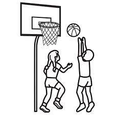
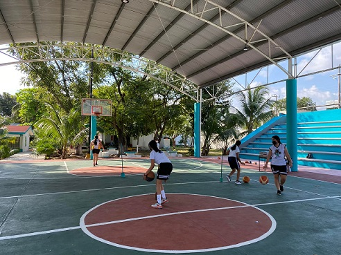

Basquetbol
El nombre de la profesora que se encarga de dar las clases del paraescolar de basquetbol es Norma Hortensia Corona Sánchez.
La profesora enseña algunos movimientos básicos del basquetbol, también pone a investigacaiones acerca del paraescolar de basquetbol y sus reglas, esto con el fin de tener una idea de cómo es este deporte y al momento de llevarlo a la práctica presencial no se comience de cero.
Horarios:
Turno vespertino
| Horarios |
Lunes |
Sábado |
| 8:00-9:00 |
|
1ro matutino |
| 9:00-10:00 |
1ro vespertino |
1ro matutino |
| 10:00-11:00 |
1ro verspertino |
PRE-SELECTIVO |
| 11:00-12:00 |
3ro vespertino |
PRE-SELECTIVO |
| 12:00-13:00 |
3ro vespertino |
SELECTIVO |
| 13:00-14:00 |
5to vespertino |
SELECTIVO |
Turno matutino
| Horarios |
Lunes |
SÁBADO |
| 14:00-15:00 |
5to matutino |
SELECTIVO |
| 15:00-16:00 |
3ro matutino |
|
| 16:00-17:00 |
3ro matutino |
|
